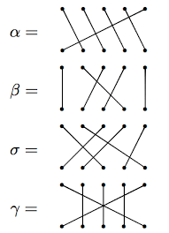
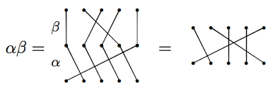
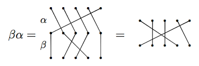
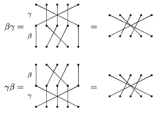
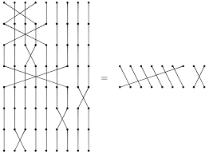
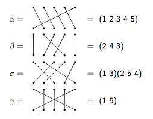

The Futurama Theorem
Here is the solution presented in the show.

Note:This image is taken from The Infosphere: The Futurama Wiki.
December 4, 2015
Note: Use arrow keys to advance slides, get an overview of slides by typing "m", go to specific slide by typing "g".
Here is short clip with Professor Farnsworth and the Globe Trotters.
This is what you pieced together:
The upshot: \[a \rightarrow h \rightarrow l \rightarrow p \rightarrow b \rightarrow e \rightarrow w \rightarrow a \text{ and } f \leftrightarrow z\]
The question is:
Can the machine be used to put everyone's mind back in the proper body if we are not allowed to use the machine on the same pair of bodies more than once?
Model: permutations (i.e., rearrangements) of numbers. The set of all permutations of $S_n = \{1, …, n\}$ forms a symmetric group under composition:
It is symmetric because it contains all such permutations.
A group is a set with an associative binary operation satisfying:
One way of representing an element of the symmetric group is via permutation diagrams, which we illustrate by way of example.

Let's try multiplying.
Let $\alpha$ and $\beta$ be as on previous slide. Then

But on the other hand

We see that products of permutations do not necessarily commute (order matters).
However, sometimes permutations do commute.
Let $\beta$ and $\gamma$ be as before. Then

Notice that these result in the same diagram. So, $\beta$ and $\gamma$ commute.
If we let $a=1$, $h=2$, $l=3$, $p=4$, $b=5$, $e=6$, and $w=7$, $f=8$, and $z=9$, then the mind swaps from Futurama can be depicted as:

The problem can be restated as:
Suppose $p$ is a permutation that results from multiplying distinct transpositions. Can we multiply $p$ by a sequence of transpositions that we have not yet used to obtain the identity permutation?
It turns out that, in general, the answer is yes. Keeler's trick to pulling this off is to add in two more people that have not used the machine.
Here is the solution presented in the show.
Note:This image is taken from The Infosphere: The Futurama Wiki.
Before describing the solution, we need to introduce a more efficient way of encoding our permutations. One such method is called cycle notation.

Let's try multiplying using cycle notation. Note: We will multiply right to left (like function composition).
Consider $\alpha, \beta$, and $\gamma$ in $S_{5}$ as in the previous examples. Then
\[\alpha \beta=(1\; 2\; 3\; 4\; 5)(2\; 4\; 3)=(1\; 2\; 5).\]
and
\[\gamma\beta =(2\; 4\; 3)(1\; 5)=(1\; 5)(2\; 4\; 3).\]
We saw earlier that $\beta$ and $\gamma$ commute with each other, which is why it looks like nothing happened in the second example.
Consider just the 7-cycle $(1\; 2\; 3\; 4\; 5\; 6\; 7)$. Introduce two new bodies that have not had their minds swapped with anyone else, say $x$ and $y$. To return all minds of 1-7 back to their rightful owner, multiply the cycle (on the left) by the following sequence of transpositions:
\[{\color{blue}{(x\; 7)}}{\color{red}{(y\; 1)(y\; 2)(y\; 3)(y\; 4)(y\; 5)(y\; 6)(y\; 7)}}{\color{blue}{(x\; 1)}}\]
Let's verify that this actually works! First, notice that all of these transpositions are distinct and since $x$ and $y$ are new, we never used any of the above transpositions to obtain our original scrambling of minds.
\[{\color{blue}{(x\; 7)}}{\color{red}{(y\; 1)(y\; 2)(y\; 3)(y\; 4)(y\; 5)(y\; 6)(y\; 7)}}{\color{blue}{(x\; 1)}}(1\; 2\; 3\; 4\; 5\; 6\; 7)=???\]
Note: $x$ and $y$ now have their minds swapped with each other, but they never sat in the machine at the same time!
Consider the $k$-cycle $(1\; 2\; \ldots\; k)$. How do we "fix" this cycle?
As before, introduce two new bodies that have not used the machine, say $x$ and $y$. To fix a $k$-cycle, multiply the cycle (on the left) by the following:
\[{\color{blue}{(x\; k)}}{\color{red}{(y\; 1)(y\; 2)\cdots (y\; k-1)(y\; k)}}{\color{blue}{(x\; 1)}}\]
Why does this work?!
What do we do when we have multiple disjoint cycles to start with?
Okay, that's it. Thank you!
/